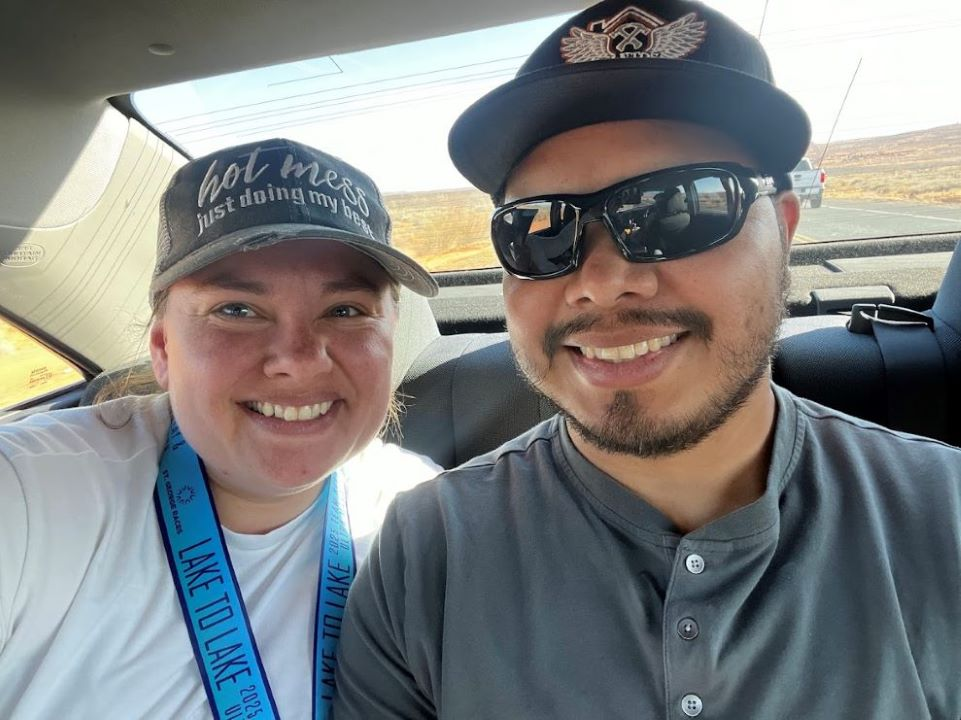

Savanah Santos | WDD 130
Hello! My name is Savanah Santos and I am from Cedar City, UT. I enjoy spending time with my family, running races, anythingmusic, and my favorite food is italian! I served a mission for the Church of Jesus Christ of Latter-day Saints in Oklahoma, Spanish Speaking, which is where I met my wonderful, loving husband. We have been married for just over eight years now. We have four dogs, one cat, 16 chickens, and three roosters! I am fluent in the Spanish language. I am the eighth out of ten children. My husband and I have our own roofing construction company called Santos Roofing & Construction.
A few of my favorite temples are: